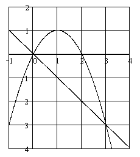

П 25 №2
Вычислите площадь сегмента, отсекаемого прямой  от параболы ..
от параболы ..
от параболы ..Решение:
Преобразуем уравнение параболы:
,
.
Находим абсциссы точек пересечения параболы и прямой :
: и
.
.

Ответ:
от параболы ..: